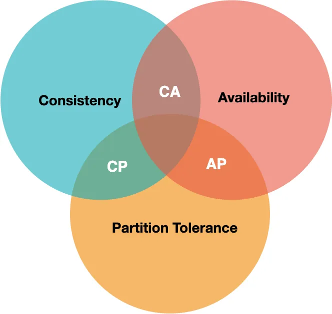
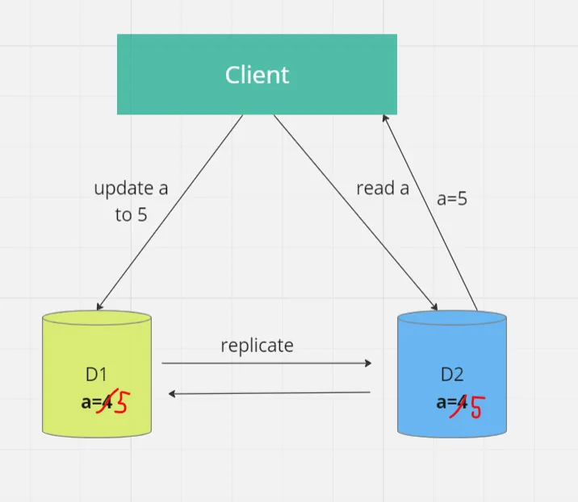
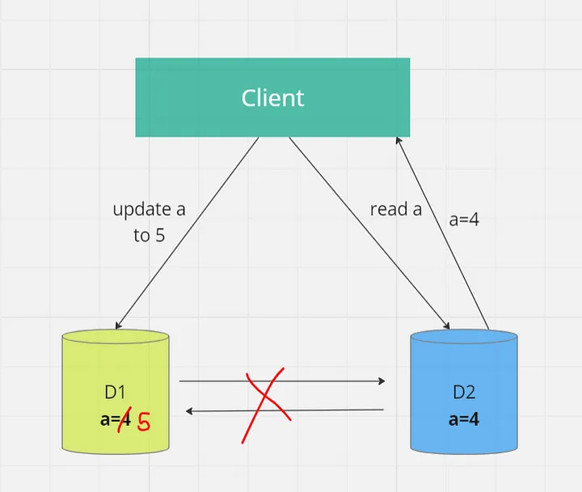
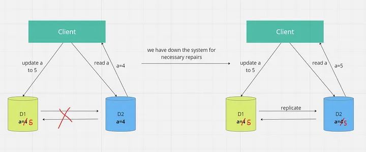

Understanding the CAP Theorem in Distributed Systems
Posted on November 4, 2024
In the world of distributed systems, where data needs to be stored and accessed across multiple servers or nodes, ensuring the system’s reliability, performance, and consistency can be quite challenging. To address these challenges, computer scientist Eric Brewer introduced the CAP theorem, which has become a fundamental concept in the design and operation of distributed systems. In this blog, we’ll delve into the CAP theorem, exploring what it is, its implications, and how it influences the design choices of distributed databases.
What is CAP Theorem?
The CAP theorem, also known as Brewer’s theorem, was introduced by Eric Brewer in 2000. The three letters in the CAP theorem stand for:
- C: Consistency
- A: Availability
- P: Partition Tolerance
The theorem articulates the inherent trade-offs that exist when designing distributed systems.
Statement of CAP theorem
The CAP theorem states that it is not possible to guarantee all three of the desirable properties — consistency, availability, and partition tolerance at the same time in a distributed system with data replication.
Consistency
In a distributed system, consistency means that all nodes or replicas in the system have the same data at the same time. When a client reads data, it receives the most recent write or an error. In other words, there is no divergence in the data observed by different nodes.
Suppose we are working on a distributed system having client node and two database nodes say d1 and d2 . Now let’s say we have generated an update request to d1 and at the same time we have generated a read request at d2 . So here due to replication of data between d1 and d2 we are able to access latest data . This is called consistency .
Availability
Availability refers to the system’s ability to respond to client requests, even in the presence of node failures or network partitions. An available system ensures that every request eventually receives a response, though it doesn’t guarantee that the response contains the most recent data.
Partition Tolerance
Partition tolerance deals with the system’s ability to continue functioning even when network partitions occur. Network partitions can cause nodes to lose contact with one another, making communication and synchronization difficult.
Suppose somehow the connection between d1 and d2 breaks down now the replication of data will not occur hence consistency is not maintained but still both systems are generating output. This is partition tolerance. So even after connection breakdown the output is being generated by systems is partition tolerance.
CAP theorem says that we cannot have all three properties i.e. C A P at same time we can have at most two at once . So let’s understand this . All possible combinations of consistency , availability and partition tolerance are CA (consistency + availability ) , AP (availability + partition tolerance ) and CP (consistency + partition tolerance ) .
CAP Theorem Combinations
- CA (Consistency + Availability): Here, the complete system is consistent and always available. However, if we break the connection between systems to introduce partition tolerance, we lose consistency.
- AP (Availability + Partition Tolerance): In this case, the system is partition tolerant and always available, but consistency is not guaranteed.
- CP (Consistency + Partition Tolerance): This combination ensures consistency and partition tolerance but may sacrifice availability when a connection needs to be re-established. 


Why is the CAP theorem important?
The CAP theorem is important because it forces developers to think carefully about the trade-offs they’re making when building a distributed system. When designing a distributed system, you have to decide which two properties are most important for your use case.
For example, if you’re building a banking application, consistency is likely to be the most important property because you can’t afford to have different account balances for different users. On the other hand, if you’re building a social media application, availability is likely to be the most important property because users will expect the application to be up and running all the time.
Real-World Examples
- Amazon DynamoDB: DynamoDB is designed to provide high availability and partition tolerance, replicating data across multiple Availability Zones to ensure data durability and availability.
- Google Spanner: Google’s Spanner database is an example of a CP system, achieving strong consistency but with potential unavailability during network partitions.